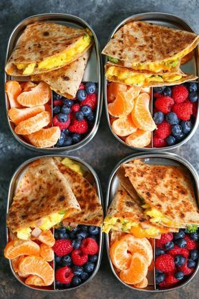
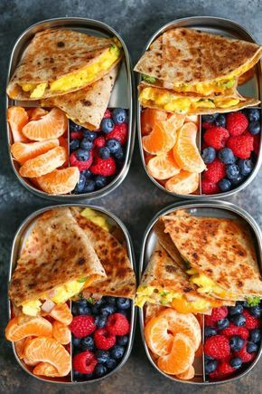

15 ideias de café da manhã para começar o dia bem
2021.06.21 21:33

× Home Pesquise e navegue Agenda de eventos Estabelecimentos Notícias e galerias Filmes e sinopses Stories Receitas Viagens Gastronomia Restaurantes Bares Na Cidade Shows Cinema Filmes e séries TV Jogos Teatro Exposição Literatura Moda e Beleza Casa e decoração Saúde e Bem-Estar Pet Famosos Comportamento Especiais Resenhas de Filmes Receitas Por Redação Guia da Semana
15 ideias de café da manhã para começar o dia bem
Aproveite nossas sugestões de dar água na boca para a refeição que é a mais importante do dia.
Foto: ShutterstockVocê já deve ter ouvido falar que o café da manhã é a refeição mais importante do dia, né? Isso porque nós passamos muitas horas em jejum enquanto estamos dormindo. Ou seja, para começarmos o dia cheios de energia para cumprir as obrigações, precisamos de alimentos que turbinem nosso metabolismo, certo?
Para te inspirar a ter um delicioso café da manhã todos os dias, o Guia da Semana preparou uma lista com 15 ideias de café da manhã para começar o dia bem! Confira a seguir:
8 ideias para substituir o pão francês no café da manhã 12 receitas de suco detox para você substituir o café da manhã 9 lugares para comer um bom bolo caseiro em SP Galeria de fotos Omelete de vegetais Foto: ShutterstockOmelete de vegetais
Ingredientes
1 cebola picada
50ml de óleo
3 dentes de alho amassados
3 cenouras raladas
100g de repolho picado,
1 lata de milho
5 ovos
Sal a gosto
Modo de Preparo
Coloque o óleo em uma frigideira média, coloque a cebola e dê uma fritada homogênea, depois adicione o alho, a cenoura, o repolho e o milho. Coloque sal a gosto mexa tudo por 2 minutos. Coloque uma tampa na frigideira e deixe cozinhar no bafo por mais 5 minutos, sempre cuidando para não queimar. Feito isso tire a tampa e coloque os ovos na frigideira e mexa tudo de forma homogênea. Cozinhe em baixo por mais dez minutos, sempre cuidando para não queimar. Retire do fogo e sirva quente.
Foto: ShutterstockOmelete de Brócolis
Ingredientes
2 ovos
2 colher de sopa de manteiga
4 ramos de brócolis picado
1 tomate picado
2 fatias de queijo mussarela picado
sal e pimentaa gosto
Modo de Preparo
Em um tigela, bata dois ovos. Adicione 1 pitada de sal, pimenta e reserve. Cozinhe o brócolis, depois em uma frigideira coloque 2 colheres de manteiga e dê uma refogada no brócolis. Em seguida adicione os ovos batidos, os tomates e o queijo. Frite até ficar firme. Vire e frite do outro lado.
Foto: ShutterstockSmoothie de laranja com cenoura
Ingredientes
2 laranjas (suco)
½ cenoura crua ralada
1 colher de sopa de óleo de coco
Modo de Preparo
Bata todos os ingredientes no liquidificador e sirva gelado.
Foto: ShutterstockTorrada com ricota
Ingredientes
300 g de ricota
2 colheres de sopa de maionese light
1/2 cebola pequena picadinha
cebolinha desidratada
azeitonas verdes picadinhas
azeite extra virgem
pão de forma integral
Modo de Preparo
Amasse a ricota com um garfo. Acrescente a maionese, o suficiente para dar liga. Misture a cebola, cebolinha e as azeitonas. Coloque azeite a gosto. Tempere com sal a gosto. Use como recheio no pão de forma integral.
Foto: ShutterstockOvos Mexidos
Ingredientes
2 ovos
2 colher de sopa de manteiga
4 ramos de brócolis picado
1 tomate picado
2 fatias de queijo mussarela picado
sal e pimenta a gosto
Modo de Preparo
Em um tigela, bata dois ovos. Adicione 1 pitada de sal, pimenta e reserve. Cozinhe o brócolis, depois em uma frigideira coloque 2 colheres de manteiga e dê uma refogada no brócolis. Em seguida adicione os ovos batidos, os tomates e o queijo. Frite até ficar firme. Vire e frite do outro lado.
Foto: ShutterstockSmoothie de banana e amendoim
Ingredientes
200 ml de bebida vegetal de sua preferência (arroz, amêndoa, aveia, soja) ou leite desnatado
1 banana prata congelada
1 colher (chá) de cacau em pó
1 colher (chá) de pasta de amendoim integral
1 colher (sobremesa) de semente de chia
Modo de Preparo
Bata no liquidificador todos os ingredientes até formar uma mistura homogênea.
Foto: ShutterstockVitamina de abacate e hortelã
Ingredientes
1 abacate
5 folhas frescas de hortelã
1 copo de leite
2 colheres de açúcar
Modo de Preparo
Bata todos os ingredientes no liquidificador e sirva gelado.
Foto: ShutterstockQueijo Quente com mantiega e páprica
Ingredientes
2 fatias de pão da sua preferência
3 colheres de sopa de manteiga com sal
1 colher de café de páprica
4 fatias de queijo mussarela
Modo de Preparo
Misture a páprica e a manteiga até ficar um creme homogêneo. Passe a mateiga nas fatias de pão. Recheie com o queijo. Leve até uma frigideira quente e frite o sanduíche de ambos os lados até que o queijo derreta.
Foto: ShutterstockVitamina de mamão, cenoura e laranja
Ingredientes
1 mamão
1 cenoura ralada
2 copos de suco de laranja
Modo de Preparo
Bata todos os ingredientes no liquidificador e sirva gelado.
Foto: ShutterstockPanqueca de banana
Ingredientes
1 banana
2 ovos
Modo de preparo
Bata no liquidificador os ovos e a banana. Coloque uma concha de massa na frigideira apenas morna. Em fogo bem baixo, espere um minutinho e vire para assar do outro lado. Sirva com calda de frutas ou a cobertura de sua preferência.
Foto: ShutterstockWaffle
Ingredientes
2 ovos
2 colher de sopa de manteiga
4 ramos de brócolis picado
1 tomate picado
2 fatias de queijo mussarela picado
sal e pimenta a gosto
Modo de Preparo
Em um tigela, bata dois ovos. Adicione 1 pitada de sal, pimenta e reserve. Cozinhe o brócolis, depois em uma frigideira coloque 2 colheres de manteiga e dê uma refogada no brócolis. Em seguida adicione os ovos batidos, os tomates e o queijo. Frite até ficar firme. Vire e frite do outro lado.
Foto: ShutterstockPanqueca americana
Ingredientes
½ xícara de leite
1 ovo
1 xícara de farinha de trigo
2 colheres (chá) de fermento em pó
1/2 colher (chá) de sal
2 colheres (sopa) de açúcar
1 colher (chá) de óleo
1 colher (chá) de essência de baunilha
Modo de Preparo
Misture todos os ingredientes com o auxílio de um fouet. Bata até que a massa esteja homogênea (todos os ingredientes bem misturadinhos, sem bolotas de farinha). Em uma frigideira antiaderente, coloque mais ou menos 2 colheres (sopa) de massa, sem espalhar. Quando a massa estiver com “bolhas”, vá soltando delicadamente com a ajuda de uma espátula. Vire a panqueca e deixe o outro lado dourar. Depois é só escolher o recheio e servir. As opções de recheio são muito variadas: geleia caseira, doce de leite, mel, frutas, chocolate derretido.
Foto: ShutterstockRosquinha
Ingredientes
3 ovos
½ xícara de chá de óleo
3 xícaras de chá de açúcar
½ colher de sopa de sementes de erva-doce
500 g de farinha de trigo
1 colher de sopa de fermento químico em pó
Óleo de girassol para fritar
Modo de Preparo
Em uma tigela, misture todos os ingredientes da massa, exceto 1 xícara de açúcar e a cachaça. Faça cordões com a espessura e o comprimento de um lápis e feche, formando as roscas. Frite, aos poucos, no óleo bem quente e escorra sobre papel-toalha. Passe a rosquinha no açúcar. Ao esfriar, guarde num pote com tampa por até uma semana.
Foto: ShutterstockBolo Formigueiro
Ingredientes
2 xícaras de chá de farinha
2 xícaras de chá de açúcar
1 colher de sopa de fermento em pó
3 ovos
1/2 xícara de chá de óleo
1 xícara de chá de leite
1/2 pacotinho de 100 g de chocolate granulado
Modo de Preparo
Coloque em uma vasilha a farinha, o açúcar e o fermento e mexa. Adicione os ovos, o óleo, o leite e mexa tudo. Adicione o chocolate granulado e mexa. Leve ao forno em uma forma untada e enfarinhada por aproximadamente 25 minutos no forno médio.
Foto: ShutterstockBolo de fubá com goiabada
Ingredientes
Calda
1 xícara (chá) de goiabada em cubos
1 xícara (chá) de água
Massa
3 ovos
2 xícaras (chá) de açúcar
1 xícara (chá) de leite
1 xícara (chá) de óleo
2 xícaras (chá) de fubá
1 xícara (chá) de farinha de trigo
1 colher (sopa) de fermento em pó
Manteiga e farinha de trigo para untar e enfarinhar a fôrma
Demais ingredientes
1 xícara (chá) de goiabada em cubos
1 xícara (chá) de farinha de trigo
Modo de Preparo
Em uma panela, coloque a goiabada, a água e deixe apurar no fogo baixo até que a goiabada derreta. Enquanto isso, bata na batedeira os ovos com o açúcar até que obtenha um creme esbranquiçado. Acrescente o leite, o óleo, o fubá, a farinha de trigo e bata até que fique homogêneo. Por fim, junte o fermento em pó e misture delicadamente. Despeje em uma forma untada e enfarinhada. Passe os cubos de goiabada na farinha de trigo, retire o excesso e distribua sobre a massa. Leve para assar no forno médio (180ºC) pré-aquecido por cerca de 30 minutos. Desenforme e cubra-o com a calda.
Atualizado em 4 Set 2020.
Mais notícias
Receita: aprenda a fazer croissant com chocolate em casa
Receitas
Receita de pudim mesclado de chocolate vai te surpreender pelo sabor; confira!
Receitas
Receita: aprenda a fazer uma deliciosa farofa de banana
Receitas
Torta de abacaxi, ricota e coco é opção deliciosa para a sobremesa; veja a receita!
Receitas
Receita: aprenda a fazer bolo de tapioca sem glúten e sem lactose
Receitas
Receita: como fazer miniquiche de frango e legumes
Receitas Ver todas
Confira também
Receita de pudim mesclado de chocolate vai te surpreender pelo sabor; confira!
Receita: aprenda a fazer croissant com chocolate em casa
Receita: aprenda a fazer uma deliciosa farofa de banana
Torta de abacaxi, ricota e coco é opção deliciosa para a sobremesa; veja a receita!
Mais de 30 receitas de sopas e caldos para fazer em casa
10 sobremesas com brigadeiro para fazer hoje mesmo
Gastronomia Restaurantes Receitas Noite Bares Agenda da semana Programação completa Cinema Estreias da semana Filmes em cartaz Estilo de vida Bem estar Moda e beleza Comportamento TV e famosos Novelas Filmes e séries Reality shows Famosos Mais canais Artes e teatro Filhos Shows Turismo Na Cidade Guia da semana Sobre nós Anuncie Comunicar Erro Contato Política de Privacidade e Termos de Uso Registrar Estabelecimento Evento© 2003 - 2021 Guia da semana. Todos os direitos reservados.
- 13 dicas para um café da manhã nutritivo - Caldo Bom
- Receitas de café da manhã: 7 opções para sair da rotina .
- 10 receitas de café da manhã saudável em até 5 minutos .
- Especial café da manhã - Panelinha
- Receita de Panqueca americana | CyberCook
- 8 sugestões para um café da manhã saudável, delicioso e .
- → 20 melhores RECEITAS PARA O CAFÉ DA MANHÃ .
- 11 receitas para o café da manhã para começar o dia bem
- 15 ideias de café da manhã para começar o dia bem
- 32 receitas que vão te ajudar a preparar um café da manhã .
- 13 dicas para um café da manhã nutritivo - Caldo Bom
- Receitas de café da manhã: 7 opções para sair da rotina .
- 10 receitas de café da manhã saudável em até 5 minutos .
- Especial café da manhã - Panelinha
- Receita de Panqueca americana | CyberCook
- 8 sugestões para um café da manhã saudável, delicioso e .
- → 20 melhores RECEITAS PARA O CAFÉ DA MANHÃ .
- 11 receitas para o café da manhã para começar o dia bem
- 15 ideias de café da manhã para começar o dia bem
10 saudável em até 5 minutos · 1. Bolo de chocolate com 3 ingredientes · 2 . - 32 receitas que vão te ajudar a preparar um café da manhã .
10 saudável em até 5 minutos · 1. Bolo de chocolate com 3 ingredientes · 2 .
 
